食で つながる。 京と、あす。 京都の食に関するアレコレ、京の食を支えるヒトビト、 京の食文化をミライにつなげるサイト。
京の食路とは
Previous
お知らせ Information
- 2022.04.15
- 【参加無料】そろり、きょうと、そろそろり。～春の京散歩～
- 2022.02.24
- 体験イベント「プレ京の食路」が1/29に開催されました。
- 2021.12.08
- 1月29日「京の食路」フルオープン！体験イベント「プレ京の食路」が開催されます
食でつながる。京と、あす。京の食路
京の食路とは
Previous